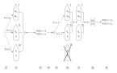

10 Two puzzles and more tools
10.1 Introduction
In the next chapter we will deal with some more involved problems in probability, as a preparation for statistics, where we use reasoning from probability to draw conclusions about a world like our own, where variation often appears to be more or less random.
Before we get down to the business of complex probabilistic problems in the next few chapters, let’s consider a couple of peculiar puzzles. These puzzles allow us to introduce some more of the key tools in R for Monte Carlo resampling, and show the power of such simulation to help solve, and then reason about, problems in probability.
10.2 The treasure fleet recovered
This is a classic problem in probability:1
A Spanish treasure fleet of three ships was sunk at sea off Mexico. One ship had a chest of gold forward and another aft, another ship had a chest of gold forward and a chest of silver aft, while a third ship had a chest of silver forward and another chest of silver aft. Divers just found one of the ships and a chest of gold in it, but they don’t know whether it was from forward or aft. They are now taking bets about whether the other chest found on the same ship will contain silver or gold. What are fair odds?
These are the logical steps one may distinguish in arriving at a correct answer with deductive logic (portrayed in Figure 10.1).
Postulate three ships — Ship I with two gold chests (G-G), ship II with one gold and one silver chest (G-S), and ship III with S-S. (Choosing notation might well be considered one or more additional steps.)
Assert equal probabilities of each ship being found.
Step 2 implies equal probabilities of being found for each of the six chests.
Fact: Diver finds a chest of gold.
Step 4 implies that S-S ship III was not found; hence remove it from subsequent analysis.
Three possibilities: 6a) Diver found chest I-Ga, 6b) diver found I-Gb, 6c) diver found II-Gc.
From step 2, the cases a, b, and c in step 6 have equal probabilities.
If possibility 6a is the case, then the other chest is I-Gb; the comparable statements for cases 6b and 6c are I-Ga and II-S.
From steps 6 and 7: From equal probabilities of the three cases, and no other possible outcome, \(P(6a) = 1/3\), \(P(6b) = 1/3\), \(P(6c) = 1/3\).
So \(P(G) = P(6a) + P(6b)\) = 1/3 + 1/3 = 2/3.
See Figure 10.1.
The following simulation arrives at the correct answer.
- Write “Gold” on three pieces of paper and “Silver” on three pieces of paper. These represent the chests.
- Get three buckets each with two pieces of paper. Each bucket represents a ship, each piece of paper represents a chest in that ship. One bucket has two pieces of paper with “Gold” written on them; one has pieces of paper with “Gold” and “Silver”, and one has “Silver” and “Silver”.
- Choose a bucket at random, to represent choosing a ship at random.
- Shuffle the pieces of paper in the bucket and pick one, to represent choosing the first chest from that ship at random.
- If the piece of paper says “Silver”, the first chest we found in this ship was silver, and we stop the trial and make no further record. If “Gold”, continue.
- Get the second piece of paper from the bucket, representing the second chest on the chosen ship. Record whether this was “Silver” or “Gold” on the scoreboard.
- Repeat steps (3 - 6) many times, and calculate the proportion of “Gold”s on the scoreboard. (The answer should be about \(\frac{2}{3}\).)
Here is a notebook simulation with R:
Start of gold_silver_ships notebook
# The 3 buckets. Each bucket represents a ship. Each has two chests.
bucket1 <- c('Gold', 'Gold') # Chests in first ship.
bucket2 <- c('Gold', 'Silver') # Chests in second ship.
bucket3 <- c('Silver', 'Silver') # Chests in third ship.# Mark trials as not valid to start with.
# Trials where we don't get a gold chest first will
# keep this 'No gold in chest 1, chest 2 never opened' marker.
second_chests <- rep('No gold in chest 1, chest 2 never opened', 10000)
for (i in 1:10000) {
# Select a ship at random from the three ships.
ship_no <- sample(1:3, size=1)
# Get the chests from this ship (represented by a bucket).
if (ship_no == 1) {
bucket <- bucket1
}
if (ship_no == 2) {
bucket <- bucket2
}
if (ship_no == 3) {
bucket <- bucket3
}
# We shuffle the order of the chests in this ship, to simulate
# the fact that we don't know which of the two chests we have
# found first.
shuffled <- sample(bucket)
if (shuffled[1] == 'Gold') { # We found a gold chest first.
# Store whether the Second chest was silver or gold.
second_chests[i] <- shuffled[2]
}
} # End loop, go back to beginning.
# Number of times we found gold in the second chest.
n_golds <- sum(second_chests == 'Gold')
# Number of times we found silver in the second chest.
n_silvers <- sum(second_chests == 'Silver')
# As a ratio of golds to all second chests (where the first was gold).
message(n_golds / (n_golds + n_silvers))0.655882352941176End of gold_silver_ships notebook
In the code above, we have first chosen the ship number at random, and then used a set of if ... statements to get the pair of chests corresponding to the given ship. There are simpler and more elegant ways of writing this code, but they would need some R features that we haven’t covered yet.2
10.3 Back to Boolean vectors
The code above implements the procedure we might well use if we were simulating the problem physically. We do a trial, and we record the result. We do this on a piece of paper if we are doing a physical simulation, and in the second_chests vector in code.
Finally we tally up the results. If we are doing a physical simulation, we go back over the all the trial results and counting up the “Gold” and “Silver” outcomes. In code we use the comparisons == 'Gold' and == 'Silver' to find the trials of interest, and then count them up with sum.
Boolean vectors are a fundamental tool in R, and we will use them in nearly all our simulations.
Here is a remind of how those vectors work.
First, let’s slice out the first 10 values of the second_chests trial-by-trial results tally from the simulation above:
# Get values at positions 1 through 10
first_10_chests <- second_chests[1:10]
first_10_chests [1] "Gold"
[2] "No gold in chest 1, chest 2 never opened"
[3] "No gold in chest 1, chest 2 never opened"
[4] "Silver"
[5] "Gold"
[6] "No gold in chest 1, chest 2 never opened"
[7] "Silver"
[8] "Silver"
[9] "Gold"
[10] "No gold in chest 1, chest 2 never opened"Before we started the simulation, we set second_chests to contain 10,000 strings, where each string was “No gold in chest 1, chest 2 never opened”. In the simulation, we check whether there was gold in the first chest, and, if not, we don’t change the value in second_chest, and the value remains as “No gold in chest 1, chest 2 never opened”.
Only if there was gold in the first chest, do we go on to check whether the second chest contains silver or gold. Therefore, we only set a new value in second_chests where there was gold in the first chest.
Now let’s show the effect of running a comparison on first_10_chests:
were_gold <- (first_10_chests == 'Gold')
were_gold [1] TRUE FALSE FALSE FALSE TRUE FALSE FALSE FALSE TRUE FALSE
Parentheses and Boolean comparisons
Notice the round brackets (parentheses) around (first_10_chests == 'Gold'). In this particular case, we would get the same result without the parentheses, so the paretheses are optional. In general, you will see we put parentheses around all expressions that generate Boolean vectors, and we recommend you do too. It is good habit to get into, to make it clear that this is an expression that generates a value.
The == 'Gold' comparison is asking a question. It is asking that question of a vector, and the vector contains multiple values. R treats this comparison as asking the question of each element in the vector. We get an answer for the question for each element. The answer for position 1 is TRUE if the element at position 1 is equal to 'Gold' and FALSE otherwise, and so on, for positions 2, 3 and so on. We started with 10 strings. After the comparison == 'Gold' we have 10 Boolean values, where a Boolean value can either be TRUE or FALSE.
Now we have an array with TRUE for the “Gold” results and FALSE otherwise, we can count the number of “Gold” results by using sum on the vector. As you remember (Section 5.13) sum counts TRUE as 1 and FALSE as 0, so the sum of the Boolean vector is just the number of TRUE values in the vector — the count that we need.
# The number of True values — so the number of "Gold" chests.
sum(were_gold)[1] 310.4 Boolean vectors and another take on the ships problem
If we are doing a physical simulation, we usually want to finish up all the work for the trial during the trial, so we have one outcome from the trial. This makes it easier to tally up the results in the end.
We have no such constraint when we are using code, so it is sometimes easier to record several results from the trial, and do the final combinations and tallies at the end. We will show you what we mean with a slight variation on the two-ships code you saw above.
Start of gold_silver_booleans notebook
Notice that the first part of the code is identical to the first approach to this problem. There are two key differences — see the comments for an explanation.
# The 3 buckets, each representing two chests on a ship.
# As before.
bucket1 <- c('Gold', 'Gold') # Chests in first ship.
bucket2 <- c('Gold', 'Silver') # Chests in second ship.
bucket3 <- c('Silver', 'Silver') # Chests in third ship.# Here is where the difference starts. We are now going to fill in
# the result for the first chest _and_ the result for the second chest.
#
# Later we will fill in all these values, so the string we put here
# does not matter.
# Whether the first chest was Gold or Silver.
first_chests <- rep('To be announced', 10000)
second_chests <- rep('To be announced', 10000)
for (i in 1:10000) {
# Select a ship at random from the three ships.
# As before.
ship_no <- sample(1:3, size=1)
# Get the chests from this ship.
# As before.
if (ship_no == 1) {
bucket <- bucket1
}
if (ship_no == 2) {
bucket <- bucket2
}
if (ship_no == 3) {
bucket <- bucket3
}
# As before.
shuffled <- sample(bucket)
# Here is the big difference - we store the result for the first and second
# chests.
first_chests[i] <- shuffled[1]
second_chests[i] <- shuffled[2]
} # End loop, go back to beginning.
# We will do the calculation we need in the next cell. For now
# just display the first 10 values.
ten_first_chests <- first_chests[1:10]
message('The first 10 values of "first_chests:')The first 10 values of "first_chests:print(ten_first_chests) [1] "Gold" "Silver" "Silver" "Silver" "Gold" "Gold" "Gold" "Gold"
[9] "Gold" "Gold" ten_second_chests <- second_chests[1:10]
message('The first 10 values of "second_chests:')The first 10 values of "second_chests:print(ten_second_chests) [1] "Gold" "Gold" "Silver" "Silver" "Gold" "Silver" "Gold" "Silver"
[9] "Gold" "Silver"In this variant, we recorded the type of first chest for each trial (“Gold” or “Silver”), and the type of second chest of the second chest (“Gold” or “Silver”).
We would like to count the number of times there was “Gold” in the first chest and “Gold” in the second.
10.5 Combining Boolean arrays
We can do the count we need by combining the Boolean vectors with the & operator. & combines Boolean vectors with a logical and. Logical and is a rule for combining two Boolean values, where the rule is: the result is TRUE if the first value is TRUE and the second value if TRUE.
Here we use the & operator to combine some Boolean values on the left and right of the operator:
Above you saw that the == operator (as in == 'Gold'), when applied to vectors, asks the question of every element in the vector.
First make the Boolean vectors.
ten_first_gold <- ten_first_chests == 'Gold'
message("Ten first == 'Gold'")Ten first == 'Gold'print(ten_first_gold) [1] TRUE FALSE FALSE FALSE TRUE TRUE TRUE TRUE TRUE TRUEten_second_gold <- ten_second_chests == 'Gold'
message("Ten second == 'Gold'")Ten second == 'Gold'print(ten_second_gold) [1] TRUE TRUE FALSE FALSE TRUE FALSE TRUE FALSE TRUE FALSENow let us use & to combine Boolean vectors:
ten_both <- (ten_first_gold & ten_second_gold)
ten_both [1] TRUE FALSE FALSE FALSE TRUE FALSE TRUE FALSE TRUE FALSENotice that R does the comparison elementwise — element by element.
You saw that when we did second_chests == 'Gold' this had the effect of asking the == 'Gold' question of each element, so there will be one answer per element in second_chests. In that case there was a vector to the left of == and a single value to the right. We were comparing a vector to a value.
Here we are asking the & question of ten_first_gold and ten_second_gold. Here there is a vector to the left and a vector to the right. We are asking the & question 10 times, but the first question we are asking is:
# First question, giving first element of result.
(ten_first_gold[1] & ten_second_gold[1])[1] TRUEThe second question is:
# Second question, giving second element of result.
(ten_first_gold[2] & ten_second_gold[2])[1] FALSEand so on. We have ten elements on each side, and 10 answers, giving a vector (ten_both) of 10 elements. Each element in ten_both is the answer to the & question for the elements at the corresponding positions in ten_first_gold and ten_second_gold.
We could also create the Boolean vectors and do the & operation all in one step, like this:
Remember, we wanted the answer to the question: how many trials had “Gold” in the first chest and “Gold” in the second. We can answer that question for the first 10 trials with sum:
n_ten_both <- sum(ten_both)
n_ten_both[1] 4We can answer the same question for all the trials, in the same way:
first_gold <- first_chests == 'Gold'
second_gold <- second_chests == 'Gold'
n_both_gold <- sum(first_gold & second_gold)
n_both_gold[1] 3328We could also do the same calculation all in one line:
n_both_gold <- sum((first_chests == 'Gold') & (second_chests == 'Gold'))
n_both_gold[1] 3328We can then count all the ships where the first chest was gold:
n_first_gold <- sum(first_chests == 'Gold')
n_first_gold[1] 5021The final calculation is the proportion of second chests that are gold, given the first chest was also gold:
p_g_given_g <- n_both_gold / n_first_gold
p_g_given_g[1] 0.663Of course we won’t get exactly the same results from the two simulations, in the same way that we won’t get exactly the same results from any two runs of the same simulation, because of the random values we are using. But the logic for the two simulations are the same, and we are doing many trials (10,000), so the results will be very similar.
End of gold_silver_booleans notebook
10.6 The Monty Hall problem
The Monty Hall Problem is a puzzle in probability that is famous for its deceptive simplicity. It has its own long Wikipedia page: https://en.wikipedia.org/wiki/Monty_Hall_problem.
Here is the problem in the form it is best known; a letter to the columnist Marilyn vos Savant, published in Parade Magazine (1990):
Suppose you’re on a game show, and you’re given the choice of three doors. Behind one door is a car, behind the others, goats. You pick a door, say #1, and the host, who knows what’s behind the doors, opens another door, say #3, which has a goat. He says to you, “Do you want to pick door #2?” Is it to your advantage to switch your choice of doors?
In fact the first person to propose (and solve) this problem was Steve Selvin, a professor of public health at the University of California, Berkeley (Selvin 1975).
Most people, including at least one of us, your humble authors, quickly come to the wrong conclusion. The most common but incorrect answer is that it will make no difference if you switch doors or stay with your original choice. The obvious intuition is that, after Monty opens his door, there are two doors that might have the car behind them, and therefore, there is a 50% chance it will be behind any one of the two. It turns out that answer is wrong; you will double your chances of winning by switching doors. Did you get the answer right?
If you got the answer wrong, you are in excellent company. As you can see from the commentary in Savant (1990), many mathematicians wrote to Parade magazine to assert that the (correct) solution was wrong. Paul Erdős was one of the most famous mathematicians of the 20th century; he could not be convinced of the correct solution until he had seen a computer simulation (Vazsonyi 1999), of the type we will do below.
To simulate a trial of this problem, we need to select a door at random to house the car, and another door at random, to be the door the contestant chooses. We number the doors 1, 2 and 3. Now we need two random choices from the options 1, 2 or 3, one for the door with the car, the other for the contestant door. To chose a door for the car, we could throw a die, and chose door 1 if the die shows 1 or 4, door 2 if the die shows 2 or 5, and door 3 for 3 or 6. Then we throw the die again to chose the contestant door.
But throwing dice is a little boring; we have to find the die, then throw it many times, and record the results. Instead we can ask the computer to chose the doors at random.
For this simulation, let us do 25 trials. We ask the computer to create two sets of 25 random numbers from 1 through 3. The first set is the door with the car behind it (“Car door”). The second set have the door that the contestant chose at random (“Our door”). We put these in a table, and make some new, empty columns to fill in later. The first new column is “Monty opens”. In due course, we will use this column to record the door that Monty Hall will open on this trial. The last two columns express the outcome. The first is “Stay wins”. This has “Yes” if we win on this trial by sticking to our original choice of door, and “No” otherwise. The last column is “Switch wins”. This has “Yes” if we win by switching doors, and “No” otherwise. See table Table 10.1).
| Car door | Our door | Monty opens | Stay wins | Switch wins | |
|---|---|---|---|---|---|
| 1 | 3 | 3 | |||
| 2 | 3 | 1 | |||
| 3 | 1 | 3 | |||
| 4 | 1 | 1 | |||
| 5 | 2 | 3 | |||
| 6 | 2 | 1 | |||
| 7 | 2 | 2 | |||
| 8 | 1 | 3 | |||
| 9 | 1 | 2 | |||
| 10 | 3 | 1 | |||
| 11 | 2 | 2 | |||
| 12 | 3 | 2 | |||
| 13 | 2 | 2 | |||
| 14 | 3 | 1 | |||
| 15 | 1 | 2 | |||
| 16 | 2 | 1 | |||
| 17 | 3 | 3 | |||
| 18 | 3 | 2 | |||
| 19 | 1 | 1 | |||
| 20 | 3 | 2 | |||
| 21 | 2 | 2 | |||
| 22 | 3 | 1 | |||
| 23 | 3 | 1 | |||
| 24 | 1 | 1 | |||
| 25 | 2 | 3 |
In the first trial in Table 10.1), the computer selected door 3 for car, and door 3 for the contestant. Now Monty must open a door, and he cannot open our door (door 3) so he has the choice of opening door 1 or door 2; he chooses randomly, and opens door 2. On this trial, we win if we stay with our original choice, and we lose if we change to the remaining door, door 1.
Now we go the second trial. The computer chose door 3 for the car, and door 1 for our choice. Monty cannot choose our door (door 1) or the door with the car behind it (door 3), so he must open door 2. Now if we stay with our original choice, we lose, but if we switch, we win.
You may want to print out table Table 10.1, and fill out the blank columns, to work through the logic.
After doing a few more trials, and some reflection, you may see that there are two different situations here: the situation when our initial guess was right, and the situation where our initial guess was wrong. When our initial guess was right, we win by staying with our original choice, but when it was wrong, we always win by switching. The chance of our initial guess being correct is 1/3 (one door out of three). So the chances of winning by staying are 1/3, and the chances of winning by switching are 2/3. But remember, you don’t need to follow this logic to get the right answer. As you will see below, the resampling simulation shows us that the Switch strategy wins.
Table Table 10.2 is a version of table Table 10.1 for which we have filled in the blank columns using the logic above.
| Car door | Our door | Monty opens | Stay wins | Switch wins | |
|---|---|---|---|---|---|
| 1 | 3 | 3 | 2 | Yes | No |
| 2 | 3 | 1 | 2 | No | Yes |
| 3 | 1 | 3 | 2 | No | Yes |
| 4 | 1 | 1 | 3 | Yes | No |
| 5 | 2 | 3 | 1 | No | Yes |
| 6 | 2 | 1 | 3 | No | Yes |
| 7 | 2 | 2 | 3 | Yes | No |
| 8 | 1 | 3 | 2 | No | Yes |
| 9 | 1 | 2 | 3 | No | Yes |
| 10 | 3 | 1 | 2 | No | Yes |
| 11 | 2 | 2 | 3 | Yes | No |
| 12 | 3 | 2 | 1 | No | Yes |
| 13 | 2 | 2 | 1 | Yes | No |
| 14 | 3 | 1 | 2 | No | Yes |
| 15 | 1 | 2 | 3 | No | Yes |
| 16 | 2 | 1 | 3 | No | Yes |
| 17 | 3 | 3 | 1 | Yes | No |
| 18 | 3 | 2 | 1 | No | Yes |
| 19 | 1 | 1 | 2 | Yes | No |
| 20 | 3 | 2 | 1 | No | Yes |
| 21 | 2 | 2 | 1 | Yes | No |
| 22 | 3 | 1 | 2 | No | Yes |
| 23 | 3 | 1 | 2 | No | Yes |
| 24 | 1 | 1 | 2 | Yes | No |
| 25 | 2 | 3 | 1 | No | Yes |
The proportion of times “Stay” wins in these 25 trials is 0.36. The proportion of times “Switch” wins is 0.64; the Switch strategy wins about twice as often as the Stay strategy.
10.7 Monty Hall with R
Now you have seen what the results might look like for a physical simulation, you can exercise some of your newly-strengthened R muscles to do the simulation with code.
Start of monty_hall notebook
The Monty Hall problem has a slightly complicated structure, so we will start by looking at the procedure for one trial. When we have that clear, we will put that procedure into a for loop for the simulation.
Let’s start with some variables. Let’s call the door I choose my_door.
We choose that door at random from a sequence of all possible doors. Call the doors 1, 2 and 3 from left to right.
# Vector of doors to chose from.
doors = c(1, 2, 3)
# We choose one door at random.
my_door <- sample(doors, size=1)
# Show the result
my_door[1] 3We choose one of the doors to be the door with the car behind it:
# One door at random has the car behind it.
car_door <- sample(doors, size=1)
# Show the result
car_door[1] 1Now we need to decide which door Monty will open.
By our set up, Monty cannot open our door (my_door). By the set up, he has not opened (and cannot open) the door with the car behind it (car_door).
my_door and car_door might be the same.
So, to get Monty’s choices, we want to take all doors (doors) and remove my_door and car_door. That leaves the door or doors Monty can open.
Here are the doors Monty cannot open. Remember, a third of the time my_door and car_door will be the same, so we will include the same door twice, as doors Monty can’t open.
cant_open = c(my_door, car_door)
cant_open[1] 3 1We want to find the remaining doors from doors after removing the doors named in cant_open.
R has a good function for this, called setdiff. It calculates the set difference between two sequences, such as vectors.
The set difference between two sequences is the members that are in the first sequence, but are not in the second sequence. Here are a few examples of this set difference function in R.
# Members in c(1, 2, 3) that are *not* in c(1)
# 1, 2, 3, removing 1, if present.
setdiff(c(1, 2, 3), c(1))[1] 2 3# Members in c(1, 2, 3) that are *not* in c(2, 3)
# 1, 2, 3, removing 2 and 3, if present.
setdiff(c(1, 2, 3), c(2, 3))[1] 1# Members in c(1, 2, 3) that are *not* in c(2, 2)
# 1, 2, 3, removing 2 and 2 again, if present.
setdiff(c(1, 2, 3), c(2, 2))[1] 1 3This logic allows us to choose the doors Monty can open:
montys_choices <- setdiff(doors, c(my_door, car_door))
montys_choices[1] 2Notice that montys_choices will only have one element left when my_door and car_door were different, but it will have two elements if my_door and car_door were the same.
Let’s play out those two cases:
my_door <- 1 # For example.
car_door <- 2 # For example.
# Monty can only choose door 3 now.
montys_choices <- setdiff(doors, c(my_door, car_door))
montys_choices[1] 3my_door <- 1 # For example.
car_door <- 1 # For example.
# Monty can choose either door 2 or door 3.
montys_choices <- setdiff(doors, c(my_door, car_door))
montys_choices[1] 2 3If Monty can only choose one door, we’ll take that. Otherwise we’ll chose a door at random from the two doors available.
if (length(montys_choices) == 1) { # Only one door available.
montys_door <- montys_choices[1] # Take the first (of 1!).
} else { # Two doors to choose from:
# Choose at random.
montys_door <- sample(montys_choices, size=1)
}
montys_door[1] 2Now we know Monty’s door, we can identify the other door, by removing our door, and Monty’s door, from the available options:
remaining_doors <- setdiff(doors, c(my_door, montys_door))
# There is only one remaining door, take that.
other_door <- remaining_doors[1]
other_door[1] 3The logic above gives us the full procedure for one trial.
my_door <- sample(doors, size=1)
car_door <- sample(doors, size=1)
# Which door will Monty open?
montys_choices <- setdiff(doors, c(my_door, car_door))
# Choose single door left to choose, or door at random if two.
if (length(montys_choices) == 1) { # Only one door available.
montys_door <- montys_choices[1] # Take the first (of 1!).
} else { # Two doors to choose from:
# Choose at random.
montys_door <- sample(montys_choices, size=1)
}
# Now find the door we'll open if we switch.
# There is only one door left.
remaining_doors <- setdiff(doors, c(my_door, montys_door))
other_door <- remaining_doors[1]
# Calculate the result of this trial.
if (my_door == car_door) {
stay_wins <- TRUE
}
if (other_door == car_door) {
switch_wins <- TRUE
}All that remains is to put that trial procedure into a loop, and collect the results as we repeat the procedure many times.
# Vectors to store the results for each trial.
stay_wins <- rep(FALSE, 10000)
switch_wins <- rep(FALSE, 10000)
# Doors to chose from.
doors <- c(1, 2, 3)
for (i in 1:10000) {
# You will recognize the below as the single-trial procedure above.
my_door <- sample(doors, size=1)
car_door <- sample(doors, size=1)
# Which door will Monty open?
montys_choices <- setdiff(doors, c(my_door, car_door))
# Choose single door left to choose, or door at random if two.
if (length(montys_choices) == 1) { # Only one door available.
montys_door <- montys_choices[1] # Take the first (of 1!).
} else { # Two doors to choose from:
# Choose at random.
montys_door <- sample(montys_choices, size=1)
}
# Now find the door we'll open if we switch.
# There is only one door left.
remaining_doors <- setdiff(doors, c(my_door, montys_door))
other_door <- remaining_doors[1]
# Calculate the result of this trial.
if (my_door == car_door) {
stay_wins[i] <- TRUE
}
if (other_door == car_door) {
switch_wins[i] <- TRUE
}
}
p_for_stay <- sum(stay_wins) / 10000
p_for_switch <- sum(switch_wins) / 10000
message('p for stay: ', p_for_stay)p for stay: 0.3293message('p for switch: ', p_for_switch)p for switch: 0.6707We can also follow the same strategy as we used for the second implementation of the two-ships problem (Section 10.4).
Here, as in the second two-ships implementation, we do not calculate the trial results (stay_wins, switch_wins) in each trial. Instead, we store the doors for each trial, and then use Boolean vectors to calculate the results for all trials, at the end.
# Instead of storing the trial results, we store the doors for each trial.
my_doors <- numeric(10000)
car_doors <- numeric(10000)
other_doors <- numeric(10000)
# Doors to chose from.
doors <- c(1, 2, 3)
for (i in 1:10000) {
my_door <- sample(doors, size=1)
car_door <- sample(doors, size=1)
# Which door will Monty open?
montys_choices <- setdiff(doors, c(my_door, car_door))
# Choose single door left to choose, or door at random if two.
if (length(montys_choices) == 1) { # Only one door available.
montys_door <- montys_choices[1] # Take the first (of 1!).
} else { # Two doors to choose from:
# Choose at random.
montys_door <- sample(montys_choices, size=1)
}
# Now find the door we'll open if we switch.
# There is only one door left.
remaining_doors <- setdiff(doors, c(my_door, montys_door))
other_door <- remaining_doors[1]
# Store the doors we chose.
my_doors[i] <- my_door
car_doors[i] <- car_door
other_doors[i] <- other_door
}
# Now - at the end of all the trials, we use Boolean vectors to calculate the
# results.
stay_wins <- my_doors == car_doors
switch_wins <- other_doors == car_doors
p_for_stay <- sum(stay_wins) / 10000
p_for_switch <- sum(switch_wins) / 10000
message('p for stay: ', p_for_stay)p for stay: 0.3336message('p for switch: ', p_for_switch)p for switch: 0.666410.7.1 Insight from the Monty Hall simulation
The code simulation gives us an estimate of the right answer, but it also forces us to set out the exact mechanics of the problem. For example, by looking at the code, we see that we can calculate “stay_wins” with this code alone:
# Just choose my door and the car door for each trial.
my_doors <- numeric(10000)
car_doors <- numeric(10000)
doors <- c(1, 2, 3)
for (i in 1:10000) {
my_doors[i] <- sample(doors, size=1)
car_doors[i] <- sample(doors, size=1)
}
# Calculate whether I won by staying.
stay_wins <- my_doors == car_doors
p_for_stay <- sum(stay_wins) / 10000
message('p for stay: ', p_for_stay)p for stay: 0.3363This calculation, on its own, tells us the answer, but it also points to another insight — whatever Monty does with the doors, it doesn’t change the probability that our initial guess is right, and that must be 1 in 3 (0.333). If the probability of stay_win is 1 in 3, and we only have one other door to switch to, the probability of winning after switching must be 2 in 3 (0.666).
10.7.2 Simulation and a variant of Monty Hall
You have seen that you can avoid the silly mistakes that many of us make with probability — by asking the computer to tell you the result before you start to reason from first principles.
As an example, consider the following variant of the Monty Hall problem.
The set up to the problem has us choosing a door (my_door above), and then Monty opens one of the other two doors.
Sometimes (in fact, 2/3 of the time) there is a car behind one of Monty’s doors. We’ve obliged Monty to open the other door, and his choice is forced.
When his choice was not forced, we had Monty choose the door at random.
For example, let us say we chose door 1.
Let us say that the car is also under door 1.
Monty has the option of choosing door 2 or door 3, and he chooses randomly between them.
my_door <- 1 # We chose door 1 at random.
car_door <- 1 # This trial, by chance, the car door is 1.
# Monty is left with doors 2 and 3 to choose from.
montys_choices <- setdiff(doors, c(my_door, car_door))
# He chooses randomly.
montys_door <- sample(montys_choices, size=1)
# Show the result
montys_door[1] 2Now — let us say we happen to know that Monty is rather lazy, and he will always choose the left-most (lower-numbered) door of the two options.
In the previous example, Monty had the option of choosing door 2 and 3. In this new scenario, we know that he will always choose door 2 (the left-most door).
my_door <- 1 # We chose door 1 at random.
car_door <- 1 # This trial, by chance, the car door is 1.
# Monty is left with doors 2 and 3 to choose from.
montys_choices <- setdiff(doors, c(my_door, car_door))
# He chooses the left-most door, always.
montys_door <- montys_choices[1]
# Show the result
montys_door[1] 2It feels as if we have more information about where the car is, when we know this. Consider the situation where we have chosen door 1, and Monty opens door 3. We know that he would have preferred to open door 2, if he was allowed. We therefore know he wasn’t allowed to open door 2, and that means the car is definitely under door 2.
my_door <- 1 # We chose door 1 at random.
car_door <- 1 # This trial, by chance, the car door is 1.
# Monty is left with door 3 only to choose from.
montys_choices <- setdiff(doors, c(my_door, car_door))
# He chooses the left-most door, always. But in this case, the left-most
# available door is 3 (he can't choose 2, it is the car_door).
# Notice the doors were in order, so the left-most door is the first door
# in the vector.
montys_door <- montys_choices[1]
# Show the result
montys_door[1] 2To take that into account, we might try a different strategy. We will stick to our own choice if Monty has chosen the left-most of the two doors he had available to him, because he might have chosen that door because there was a car underneath the other door, or because there was a car under neither, but he preferred the left door. But, if Monty chooses the right-most of the two-doors available to him, we will switch from our own choice to the other (unopened) door, because we can be sure that the car is under the other (unopened) door.
Call this the “switch if Monty chooses right door” strategy, or “switch if right” for short.
Can you see quickly whether this will be better than the “always stay” strategy? Will it be better than the “always switch” strategy? Take a moment to think it through, and write down your answers.
If you can quickly see the answer to both questions — well done — but, are you sure you are right?
We can test by simulation.
For our test of the “switch is right” strategy, we can tell if one door is to the right of another door by comparison; higher numbers mean further to the right: 2 is right of 1, and 3 is right of 2.
# Door 3 is right of door 1.
3 > 1[1] TRUE# A test of the switch-if-right strategy.
# The car doors.
car_doors <- numeric(10000)
# The door we chose using the strategy.
strategy_doors <- numeric(10000)
doors <- c(1, 2, 3)
for (i in 1:10000) {
my_door <- sample(doors, size=1)
car_door <- sample(doors, size=1)
# Which door will Monty open?
montys_choices <- setdiff(doors, c(my_door, car_door))
# Choose Monty's door from the remaining options.
# This time, he always prefers the left door.
montys_door <- montys_choices[1]
# Now find the door we'll open if we switch.
remaining_doors <- setdiff(doors, c(my_door, montys_door))
# There is only one door remaining - but is Monty's door
# to the right of this one? Then Monty had to shift.
other_door <- remaining_doors[1]
if (montys_door > other_door) {
# Monty's door was the right-hand door, the car is under the other one.
strategy_doors[i] <- other_door
} else { # We stick with the door we first thought of.
strategy_doors[i] <- my_door
}
# Store the car door for this trial.
car_doors[i] <- car_door
}
strategy_wins <- strategy_doors == car_doors
p_for_strategy <- sum(strategy_wins) / 10000
message('p for strategy: ', p_for_strategy)p for strategy: 0.6668We find that the “switch-if-right” has around the same chance of success as the “always-switch” strategy — of about 66.6%, or 2 in 3. Were your initial answers right? Now you’ve seen the result, can you see why it should be so? It may not be obvious — the Monty Hall problem is deceptively difficult. But our case here is that the simulation first gives you an estimate of the correct answer, and then, gives you a good basis for thinking more about the problem. That is:
- simulation is useful for estimation and
- simulation is useful for reflection.
End of monty_hall notebook
10.8 Why use simulation?
Doing these simulations has two large benefits. First, it gives us the right answer, saving us from making a mistake. Second, the process of simulation forces us to think about how the problem works. This can give us better understanding, and make it easier to reason about the solution.
We will soon see that these same advantages also apply to reasoning about statistics.